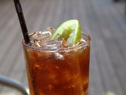

:: Breve Guida ::
Ciao a tutti! Il principale ostacolo all'utilizzo attivo del wiki è il non saper come fare a mettere su le pagine. Certo, c'è la documentazione, ma qui voglio riassumere tutto quello che serve.
Prima di tutto...
... occorre sapere come è organizzato il Wiki.
Ci sono 3 gruppi: il gruppo Main, il gruppo Uni e il gruppo Utenti.
Main
Il gruppo Main contiene questa pagina, e altre pagine di servizio. Viene usato per fini "comunitari", come possono esserlo la creazione di pagine che servano da modello agli altri, o cose simili.
Uni
Questo gruppo contiene in sé tutte le pagine che sono relative all'Università di Crema. Questo vuol dire che ci vanno dispense dei corsi, esercizi, trucchi, materiale scolastico e robe così.
Utenti
Quest'ultimo gruppo infine è a completa disposizione degli Utenti, cioè noi, compreso tu che stai leggendo. Qui ci vanno le nostre pagine personali, pagine che riguardano robe stupide o poco serie, pagine riguardanti progetti nostri, canzoni, insomma tutto. Non ci sono limiti, e basta dare un'occhiata al tipo di pagine per rendersene conto subito.
Una sola nota, riguardante l'intero Wiki: nell'esprimerci, usiamo il buon senso. Le opinioni sono liberamente esprimibili, ma in modo civile e non offensivo.
Accesso libero
Sì, l'accesso è libero a tutti. Il nome utente per poter modificare le pagine (quelle non protette, cioè la stragrande maggioranza) è studente, e la password è unicrema.
Durante la modifica della pagina, è possibile modificare il campo Author: mettendoci il vostro nome. Se volete un nome utente e una password personalizzati fatevi sentire sul forum o registratevi sulla pagina apposita.
Sarebbe bello se ogni utente mettesse nel suo profilo qualche informazione che lo riguarda, come per esempio una foto e il nome, così se ci si incontra per i corridoi ci si può salutare.
Inoltre, ogni utente è caldamente invitato a crearsi una homepage nel gruppo Utenti. e metterci quello che vuole:)
Torna su
Creazione di pagine
La creazione di una pagina nuova è semplicissima, anche se un po' inusuale: occorre innanzitutto aprire una qualsiasi pagina già esistente, come le varie Sandbox, e metterci un link alla nuova pagina, in questo modo: [[nome nuova pagina]].
Anche se ci sono gli spazi in mezzo, non fa niente, poi ci pensa il wiki a sistemare le cose.
Per i più esigenti esiste un tutorial che ti mostrerà un esempio di creazione pagina passaggio per passaggio.
Torna su
I link
I link si creano quindi così: [[testo -> indirizzo]]. La parte testo indica quello che viene scritto sulla pagina, mentre la parte indirizzo indica il collegamento effettivo.
Quindi, un link fatto così [[Il Dario -> Utenti.Dario]] apparirà in questo modo: Il Dario e porterà alla pagina di Utenti.Dario. Se non metto la parte testo quello che scrivo tra le [[ e le ]] è direttamente il link.
Si possono ovviamente linkare anche pagine esterne:
[[esempio -> http://www.google.it]]
|
esempio
|
Per le pagine appartenenti allo stesso gruppo della pagina che si sta modificando, non è necessario mettere il prefisso, come ho fatto prima con [[Utenti.Dario]].
Torna su
Le categorie
Le categorie servono per catalogare le pagine, in modo da essere reperibili tramite i menu come quelli che ci sono nella sidebar qui a sinistra.
Per far appartenere una pagina ad una categoria, occorre semplicemente mettere un link formattato in questo modo: [[!Nome Categoria]] ed ecco che magicamente quella pagina apparterrà alla categoria di nome Nome Categoria.
Se quella Categoria non esiste, verrà creata.
Se viene creata una nuova pagina di Categoria, la pagina a cui vi porterà il link sarà vuota. Per far sì che la pagina di una categoria contenga la lista di tutte le pagine che appartengono a quella categoria, occorre editarla e aggiungere la riga
(:pagelist link=Category.LoschiIndividui list=normal:).
Nella pagina dei Loschi Individui, cliccando su Edit, potrete vedere questo principio all'opera.
Problema
Come si fa a creare un collegamento alla pagina della categoria?
Questa domanda nasce dal fatto che se in qualsiasi pagina metto un link a categoria, cioè un [[!Categoria]], quella pagina automaticamente appartiene alla Categoria.
Per creare un collegamento e basta, cioè mandare la gente alla pagina della categoria ma non far appartenere la pagina a cui state lavorando alla Categoria, occorre un link di questo genere:
[[Loschi Individui ->
http://www.swappa.it/wiki/index.php?n=Category.LoschiIndividui]]
Link e categorie
È importante mettere una pagina in quante più categorie possibile, come illustrato qui sopra. Ciò serve per trovare rapidamente pagine simili.
Inoltre, si dovrebbe cercare di mettere direttamente in pagina anche dei link alle pagine più o meno inerenti a quell'argomento.
Torna su
Un po' di formattazione
Il titolo
Il titolo della pagina si indica in questa forma:
(:title Titolo della Pagina:)
ed è quello che appare in cima.
È già disponibile una direttiva per dare una forma simile a tutti i titoli delle pagine: è meglio usarla nella sezione Uni per dare alle pagine un aspetto coerente, gli utenti sono più liberi:)
Si può scrivere %titolo% :: Un titolo :: seguito dal nome della pagina per ottenere questo:
:: Un titolo ::
Intestazioni
Le intestazioni di primo livello si fanno così:
!! Le categorie
|
Le categorie
|
mentre quelle di secondo livello si fanno così:
Enfasil
Per dare enfasil alle parole, le si circondano da apici.
Per il corsivo:
Per il grassetto:
Liste
Le liste puntate si creano scrivendo semplicemente delle righe precedute da un asterisco:
* elemento
* altro elemento
|
|
|
Le liste numerate invece si fanno con un # davanti alla riga, ed escono così:
# Lipton Ice Tea, per me, il numero 1.
# Estathé
|
- Lipton Ice Tea, per me, il numero 1.
- Estathé
|
Andare a capo etc.
Alla fine di una riga si mettono due \\ e si va
a capo.
Se ne metto 3, \\\mi lascia anche
una riga vuota.
Torna su
Immagini
Mettere le immagini è semplice: basta scriverne l'indirizzo:
http://www.swappa.it/wiki/uploads/Utenti/CubaLibre1.jpg
|

|
Se si vuole fare una cosa carina, si può circondare l'immagine con una cornice, e metterci una didascalia.
Per ottenere ciò si fa in questo modo:
%lframe%http://www.swappa.it/wiki/uploads/Utenti/CubaLibre1.jpg|Cuba Libre
|
Cuba Libre
|
Posso usare %rframe% per creare una cornice a destra.
Uploadare immagini
Se voglio invece uploadare immagini, devo usare la direttiva Attach:. Per visualizzare un'immagine, scrivo semplicemente Attach:http://indirizzo/immagine.jpg o quello che è.
Se voglio un link a quell'immagine, uso la sintassi [[Attach:http://indirizzo/immagine.jpg]], e infine se voglio che il link appaia senza la scritta Attach:, uso questa sintassi: [[(Attach:)http://indirizzo/immagine.jpg]].
Un'immagine già uploadata è facilmente accessibile: Attach:PaginaDoveSiTrovaLImmagine/nomeimmagine.jpg. Le immagini uploadate da altri gruppi sono altrettanto facilmente accessibili: Attach:NomeGruppo/NomePagine/Immagine.jpg.
Più difficile dirlo che farlo...
Torna su
Video
Per inserire nella pagina filmati presi da YouTube (e solo da YouTube) dovete scrivere (:youtube [codice]:), dove per [codice] si intende ciò che è scritto nell'url della pagina dopo il "/watch?v=".
Ad esempio, se l'url della pagina di YouTube col video che vi interessa è
http://it.youtube.com/watch?v=OadLXlaDQt4
sul wiki dovrete scrivere (:youtube OadLXlaDQt4:).
Torna su
Uploadare files
Funziona esattamente come per le immagini... Attach:nomefile.estensione.
Se il file esiste già, nessun problema, altrimenti apparirà un link dal quale potrete uploadare il vostro file e dargli l'estensione che volete. La dimensione massima degli upload è 1MB.
Torna su
Varie ed eventuali
Per mandare tutto a capo dopo un'immagine o qualcosa del genere, si usa il tag [[<<]].
Infine c'è la direttiva %warning% per gli avvisi:)
Danger! Keep out!
Torna su
Guide interne wiki